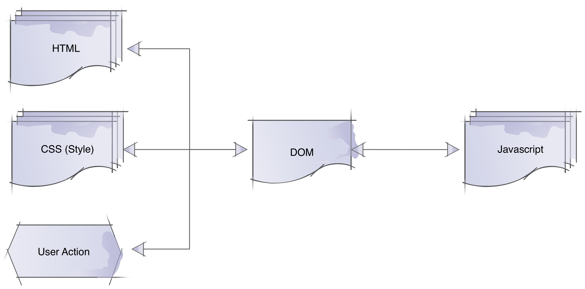

Javascript Front Development
By Bo HOU ( bo.hou@dailymotion.com )
Data Structure
Javascript In Browser

To Do: change text color to blue
<div id="greeting">Hello World!</div>How do you do it manually?
- Find the div contains the text
- Set up its style with
color: #0af;
We need a data structure to help program manupulate HTML document
DOM (Document Object Model)
DOM is a programming interface for HTML and XML documents. It represents the page so that programs can change the document structure, style, and content.
Javascript In Browser
DOM is a tree
Data types in DOM
- document
- element
- nodeList
- attribute
- namedNodeMap
Find and Change Pattern
Find it and Change it!
Find
document.getElementById(id)
document.getElementsByClassName(className)
document.querySelector(cssSelector)
document.querySelectorAll(cssSelector)
var elem = document.querySelector('#id')
elem.getElementById(id)
elem.getElementsByClassName(className)
elem.querySelector(cssSelector)
elem.querySelectorAll(cssSelector)
Change
var articles = document.querySelector('#articles');
// change elements by its properties
articles.styles.color = '#0af';
// create a new 'a' tag
var link = document.createElement('a');
// set attributes and content <a href="...">content</a>
link.setAttribute('href', 'https://dailymotion.com')
link.textContent = 'Dailymotion'
// add new link in the document
articles.appendChild(link)
by property or function